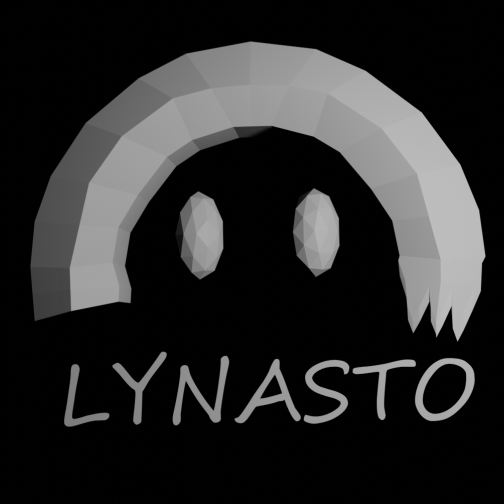

Lynasto
Lynasto est un groupe de développeurs affiliés à ce projet.
Ce projet a été développé par ZiJo*, l'un des développeurs membres de Lynasto lors de la sortie du projet. Il a été devloppé en HTML/CSS et Javascript et conçu pour ordinateurs. Une version mobile N'EST PAS en préparation.
Rejoignez notre serveur discord
* De son vrai nom Josse DE OLIVEIRA
Maupirecs
Créé en Septembre 2018, Maupirecs est un label de musique électronique qui a permis ce projet via ses musiques. Actuellement Maupirecs c'est 8 artistes à travers la France qui sont animés par la même passion pour la musique, et ce n'est que le début !